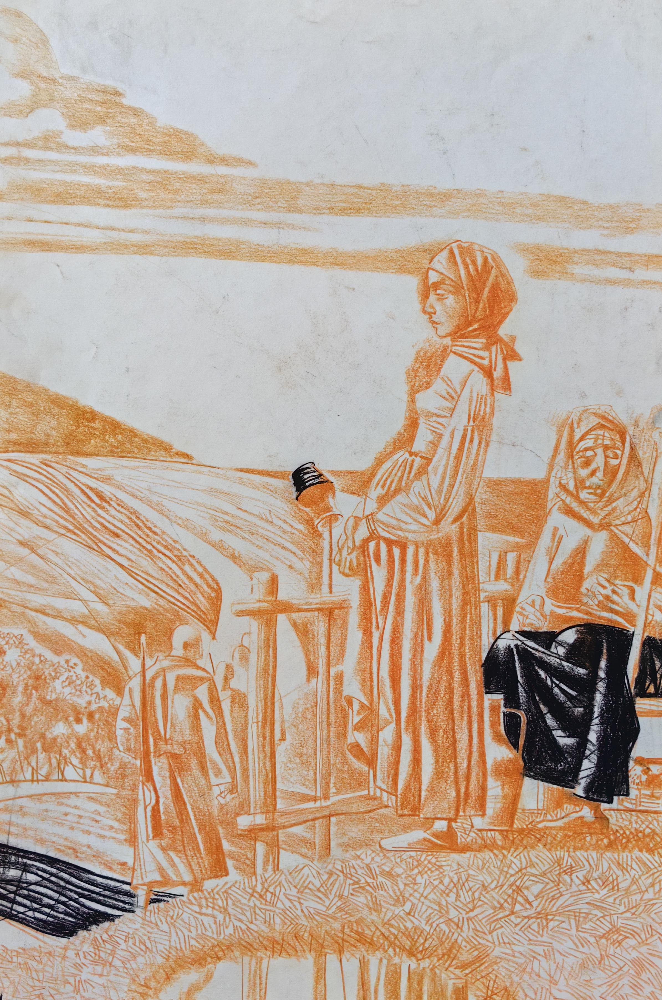
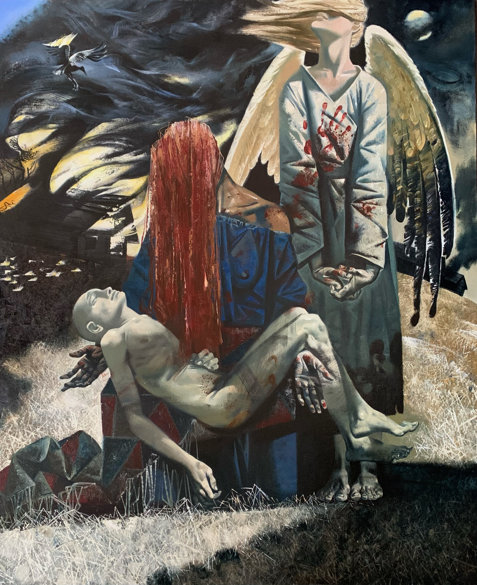
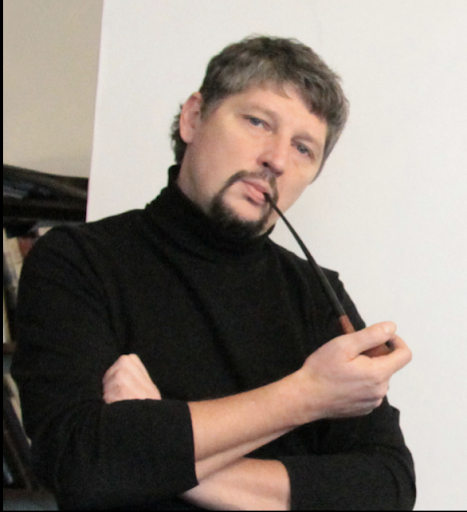

02
02

03 04
04
 05
05

06

Александр Кривонос родился 26 мая 1967 года в городе Ленинграде в семье военного. Детство прошло в Казахстане, Подмосковье, Белоруссии. В 17 лет приезжает в Ленинград и поступает в ЛХУ им. Серова. В 1984–1986 годах проходит службу в армии. С 1993 года учится в Институте им. И.Е. Репина на живописном факультете. Закончил мастерскую под руководством академика А.А. Мыльникова, далее работал в его творческой мастерской. Преподаёт в Институте им. И.Е. Репина с 1999 года по настоящее время на кафедре Рисунка.
С 1999 года реализует проекты в монументальной живописи и скульптуре, участвует в росписях Храма Христа Спасителя, Знаменском Соборе пр. Богородицы в г. Курске в составе группы академика Быстрова А.К., исполняет скульптурные композиции в соавторстве с Н. Васильевым для Аванзала в Кремле. Создаёт ряд мозаичных икон в СПб: Образ Александра Невского «Печальник земли Русской» в Коломягах, икона «Спас в силах» в Москве, мозаичная икона на фасаде часовни в Кронштадте. Параллельно работает в станковой живописи и графике. Активно участвует в совместных и персональных выставках в России и за рубежом. С 1999 по 2019 год осуществляет ряд росписей и мозаик в светских объектах города Санкт-Петербурга, Москвы, Чехова, Минска, Кингисеппа, Елизаветина, Юкках.
Награждён серебряной медалью РАХ, дипломом РАХ, дипломом Губернатора СПб, дипломом «Музы Петербурга», памятной медалью РАХ, дипломом за подписью Митрополита Владимира, дипломом за лучшую работу на выставке, посвящённой 85-летию Санкт-Петербургского Союза Художников, а также дипломом Лауреата выставки «Рисунок Санкт-Петербургских художников» в номинации «Виртуозное исполнение». 2014–2019 стали годами необычайной творческой активности Кривоноса. В феврале 2015 и в октябре 2016 он осуществил две обширные персональные выставки «Непрерывность» и «Метаморфозы» в залах Санкт-Петербургского Союза Художников, где представил целый ряд сюжетных картин.
Станковая и монументальная живопись Кривоноса преимущественно фигуративна. Однако смысл его произведений далеко не однозначен. Его жанровые сцены, античные или библейские мотивы, пейзажи, портреты обязательно вызывают широкий круг ассоциаций. Художник считает, что «неоднозначность образов и сюжетов — путь к размышлениям». И действительно, художественное произведение должно побуждать к этому. Для Кривоноса важны такие общие и вечные понятия, как Земля, Жизнь, Любовь, Красота, о них он думает. Именно они являются сутью многих его произведений, тем стержнем, который их объединяет и делает искусство этого живописца отличным от других. Это константы его творчества. Они не стесняют художника, не ограничивают его одной единственной художественной манерой. Наоборот, заставляют искать каждый раз новый способ пластического решения. «Нет лишней живописной формы, — считает художник, — она лишь намёк на внутреннюю интригу».
Время и пространство в картинах Кривоноса играют особую роль. Их присутствие ощутимо всегда. Они в первую очередь способствуют воплощению идей художника. Для него принципиально важны логика развития изображённого действия, способы освоения пространства холста, его формат, соотношение цветовых масс, активность их звучания. Непрерывность жизни на Земле — сквозная тема одноимённой картины Кривоноса. Кажется, диалог ведут времена года: жар летнего солнца и прохлада осени, весеннее тепло пробуждает набухшие почки на деревьях, а холодный ветер — предвестник зимы — срывает последние листья… Мотив жизни, её непрерывности присутствует и в запечатлённых сценах отдыха, свадьбы, хлопотах аиста в гнезде… В этой жизни на земле нет печали — звучно, мажорно звучат краски.
Невольно вспоминаются слова великого армянского художника М. Сарьяна о том, какой должна быть палитра художника, как следует ею распоряжаться: «Художник должен смотреть на свою палитру, как на цветник, и уметь обращаться с нею мастерски, как истинный садовник».
Можно отметить, что яркие сочетания цветов больше привлекают художника. Они заставляют ощутить те природные, стихийные силы, которыми живут Земля и Люди. В них самих есть нечто мистическое, роковое. Не случайно в числе любимых художников Кривоноса — мастера Возрождения; его также привлекает искусство модерна. Жизнь наполнена красками, и живописец умело пользуется ими, раздвигая границы реальности, создавая свой удивительный, эмоциональный мир. «Палитра холста — не эстетика формы, но обозначение чувства», — утверждает художник.
[Интервью: Бейбалаева Камилла]